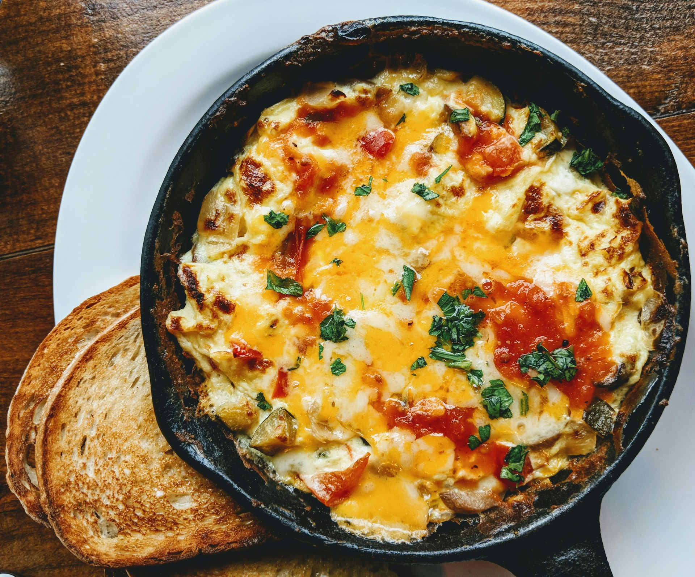

Home
Lasagna

Description
Lasagna is an Italian dish made with layers of pasta, meat sauce, and cheese.
The main ingredients are lasagna noodles, tomato sauce, ground meat, ricotta,
mozzarella, and Parmesan cheese. To make it, you layer the noodles, sauce, and
cheese in a baking dish, then bake it until the cheese melts and turns golden.
Lasagna tastes rich, warm, cheesy, and flavorful. It is often served for dinner
with salad or bread.
Ingredients
Meat Sauce
- Lasagna noodles
- Ground beef
- Italian sausage
- Onion
- Garlic
- Crushed tomatoes
- Tomato paste
- Tomato sauce
- Olive oil
- Salt
- Black pepper
- Italian seasoning
- Fresh basil or parsley
Cheese Filling
- Ricotta cheese
- Mozzarella cheese
- Parmesan cheese
- Egg
- Fresh parsley
Optional Addition
- Red pepper flakes for a little spice
- A small amount of sugar to balance the tomato sauce
- Fresh basil for topping
Steps
- Preheat the oven to 375°F.
- Cook the lasagna noodles according to the package directions, then drain them.
- In a pan, cook the ground beef and Italian sausage until browned.
- Add chopped onion and garlic, then cook for a few more minutes.
- Add tomato sauce, tomato paste, crushed tomatoes, salt, pepper, and Italian seasoning. Let the sauce simmer for 15–20 minutes.
- In a bowl, mix ricotta cheese, egg, Parmesan cheese, and parsley.
- Spread a little meat sauce on the bottom of a baking dish.
- Add a layer of noodles, then ricotta mixture, meat sauce, and mozzarella cheese.
- Repeat the layers until the dish is full.
- Top with mozzarella and Parmesan cheese.
- Cover with foil and bake for 25 minutes.
- Remove the foil and bake for another 15–20 minutes, until the cheese is golden.
- Let the lasagna rest for 10 minutes before cutting and serving.